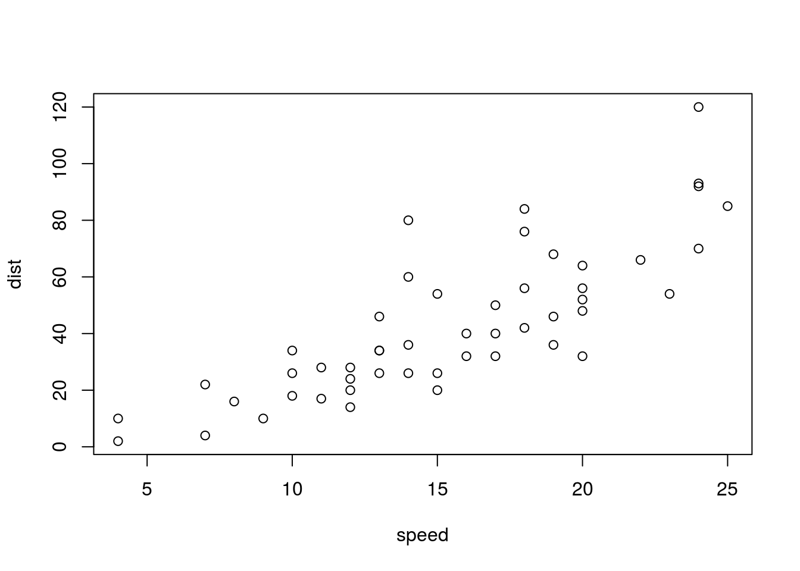

In this post we want to show how Maxent methods can be used to estimate the prices of the zero coupon prices for each possible date of maturity, when the only available information come from a few bonds offered in the market. Usually, we do not have the prices of bonds for all years or semesters. For example, it can happen that we only have bonds for maturities of 1, 2, 5, 10, 20, and 30 years, so we have to estimate the prices of the bonds that may have maturities equal to the missing years, semesters or any other level of granularity. The knowledge of these prices is essential for the valuation of derivatives and several financial products.
There are several methods that can help to estimate these prices, between them we have cubic spline interpolation, the Nelson-Siegel-Svensson method and the B-spline approach. Aditionalyy, we we will present here a simple version of the method of maximum entropy to solve this problem, that would be extended in future posts. *
block quote
# Header 1 format
latex \begin{verbatim} This is verbatim text \end{verbatim}
This is an R Markdown Notebook. When you execute code within the notebook, the results appear beneath the code.
Try executing this chunk by clicking the Run button within the chunk or by placing your cursor inside it and pressing Ctrl+Shift+Enter.
plot(cars)
Add a new chunk by clicking the Insert Chunk button on the toolbar or by pressing Ctrl+Alt+I.
When you save the notebook, an HTML file containing the code and output will be saved alongside it (click the Preview button or press Ctrl+Shift+K to preview the HTML file).